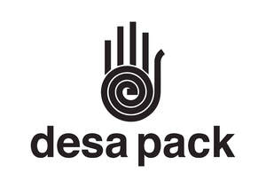

Trade Mark Journal No.2025/022 30 May 2025
UK00004204143 15 May 2025 (8,16,21,35,40,42)

- Class 8
- Cutlery; Table cutlery [knives, forks and spoons]; Biodegradable cutlery; Disposable tableware [cutlery] made of plastics.
- Class 16
- Cardboard packaging; Packaging materials; Containers of cardboard for packaging; Containers of paper for packaging; Plastic material for packaging; Foils of plastic for packaging; Plastic film for packaging; Containers of paper for packaging purposes; Packaging boxes of paper; Paper bags for packaging; Paper envelopes for packaging; Packaging containers of regenerated cellulose; Paper tissues; Bathroom tissues; Wrapping paper; Cardboard pizza boxes; Cardboard cake boxes; Printed matter; Printed stationery; Printed packaging materials of paper.
- Class 21
- Heat retaining containers for food; Cup lids; Coffee cups; Drinking cups; Plates; Table plates; Disposable table plates; Soup bowls; Foil food containers; Sandwich boxes; Food storage containers; Drinking straws; Stirrers; Cups and mugs; Plastic cups; Compostable cups; Insulating sleeve holder for beverage cups.
- Class 35
- Business marketing consultancy; Business consultancy services; Consultancy relating to business advertising; Advertising services; Research services relating to advertising; Business advisory services relating to product development.
- Class 40
- Printing services.
- Class 42
- Packaging designs; Designing of packaging and wrapping materials; Design services for packaging; Technological services and research relating thereto; Product design and development.
DESA PACK LIMITED